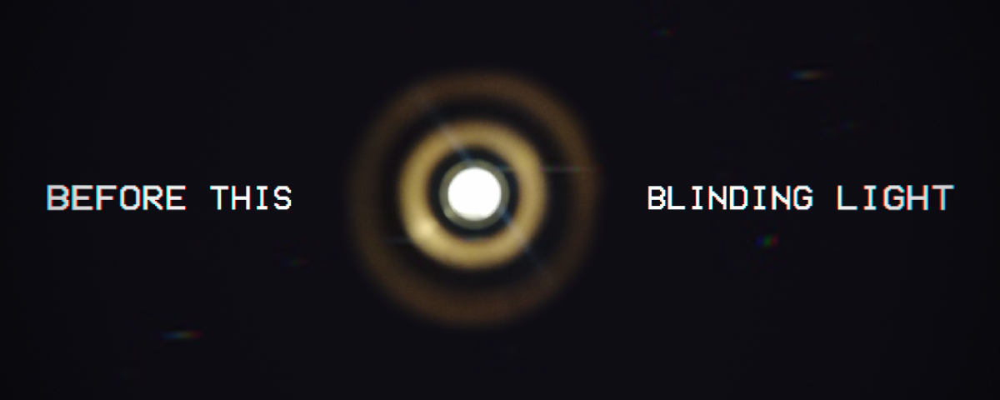
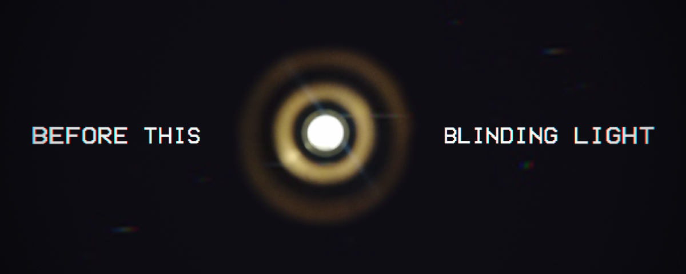
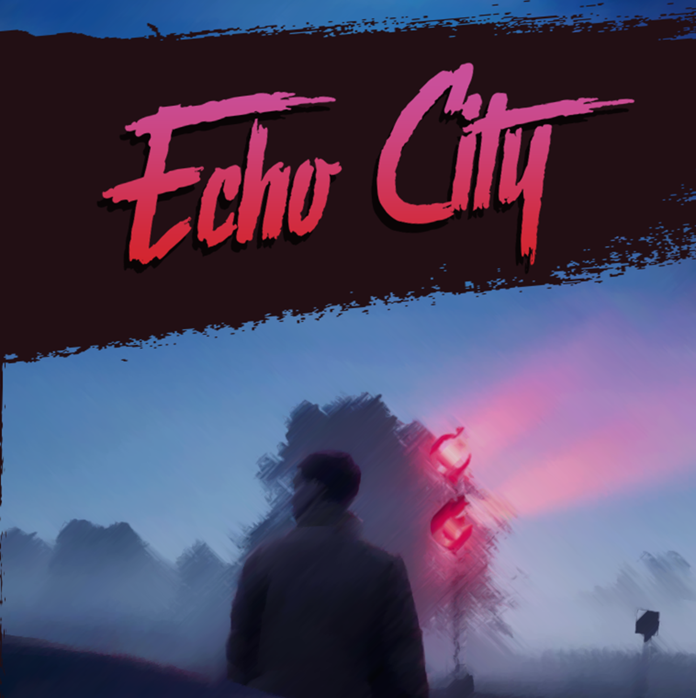
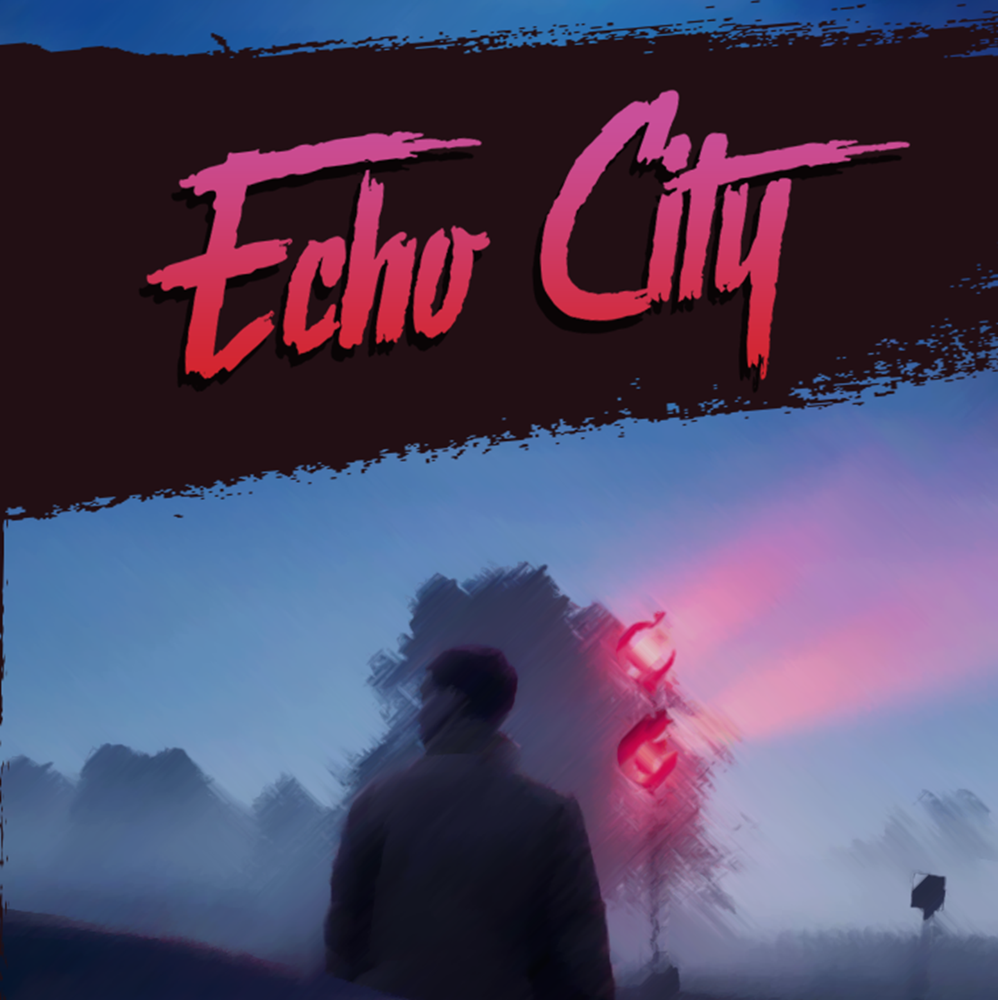

Alisha Skye
Alisha Skye
Whilst Graphic Art is certainly not my main interest, it's certainly quite high up on my list of hobbies. I mostly got into doing it through making thumbnails for YouTube videos as a teenager and followed it through for a little while in high school, taking it as one of my options. Not long afterwards, it lead me towards doing some art and UI design for games. Nowadays I am learning how to do game art in my spare time - with pixel art taking a priority.
As stated above, I got into graphic art through making logos, banners, thumbnails, icons, watermarks, etc. for my content creation on websites like YouTube and Twitch. Below are some examples of what I have created for both my own and other people's channels.

 

As someone who did a lot of video editing, and as a kid with little money to spare - I learned Photoshop and GIMP to create my own thumbnails for videos I made. They used to be rather simple, but nowadays I believe I have learned how to really make a thumbnail pop when it needs to. Because of this, I have had other people commission me to make some thumbnails for them.
For a couple of years now, I have been working on a story - and a big part of influencing that storyu was music. I made playlists of music that represented different places, people, story beats, and more. This alone caused me to fall in love wth music moreso than before - especially the older and physical formats, such as cassettes. So, I decided to create some concept art for what it could look like if this story had a couple of official soundtracks. I also made a fan-made Streets of Rage 4 Soundtrack cassette J-card design since the game was a throwback to an early 90's series, and it seemed fitting.

 
